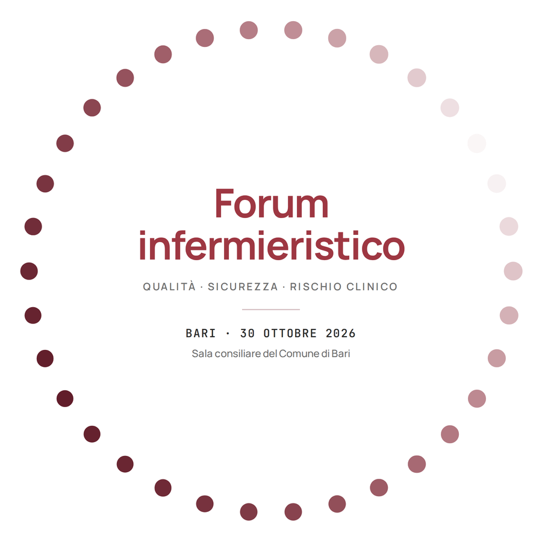

I lavori presentati
Dodici lavori, dodici modi di misurarsi.
Ricerche originali, progetti di miglioramento, casi studio e revisioni della letteratura, arrivati dalla Call for Abstract e discussi nelle sessioni del pomeriggio. Sono tutti raccolti nel volume, uno per pagina, nella forma in cui sono stati presentati.
Call for Abstract
Chiusa
i lavori selezionati sono raccolti nel volume

L'evento
Forum infermieristico:
Qualità, sicurezza e rischio clinico
Qualità, sicurezza e rischio clinico
Organizzato da
IRCCS Istituto Tumori
«Giovanni Paolo II» — Bari
«Giovanni Paolo II» — Bari
A1Sicurezza del paziente e rischio clinicoEventi avversi, near miss, incident reporting, bundle di prevenzione.
A2Misurazione, indicatori e cruscottiAudit clinici, benchmarking, qualità del dato e validità delle misure.
A3Procedure e percorsi assistenzialiScrittura, revisione, aderenza e usabilità al punto di cura.
A4Esiti sensibili all'assistenzaCadute, lesioni da pressione, ICA, missed care, dotazione infermieristica.
A5Dati, digitale e supporto alla decisioneCartella informatizzata, sistemi di allerta, uso secondario dei dati.
A6Cultura della sicurezza e formazioneJust culture, seconda vittima, simulazione, leadership clinica.
PDF
Il libro dei lavori — edizione 2026
17 pagine: il racconto della giornata, l'indice dei lavori e i 12 abstract presentati. 250 KB
Scarica ↓